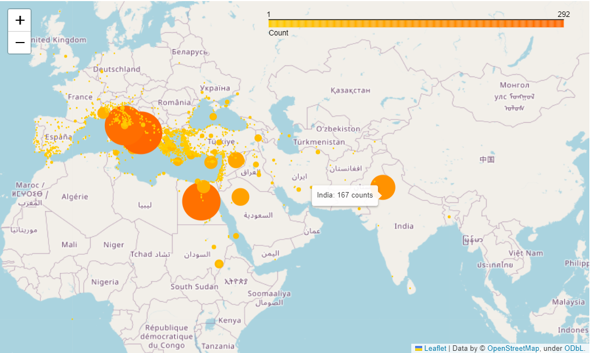
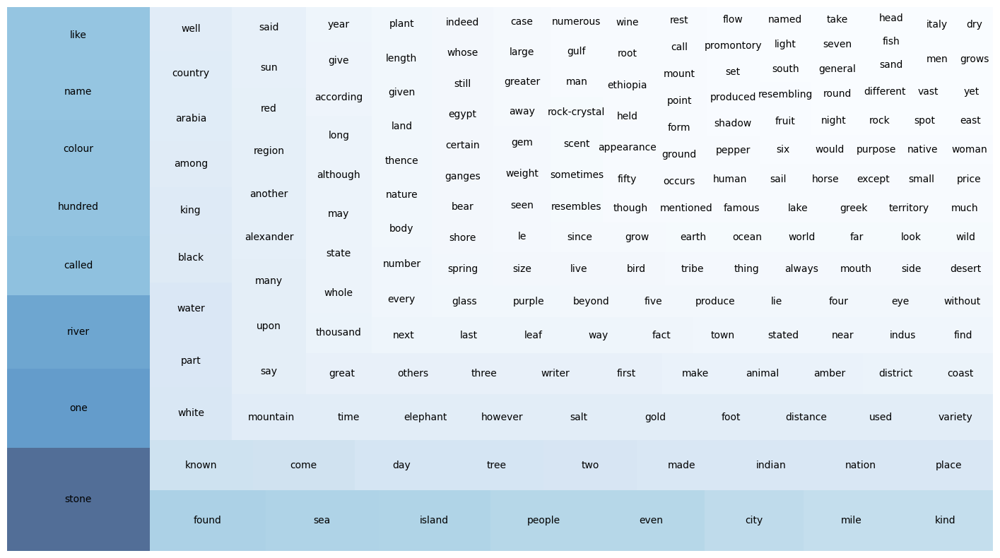
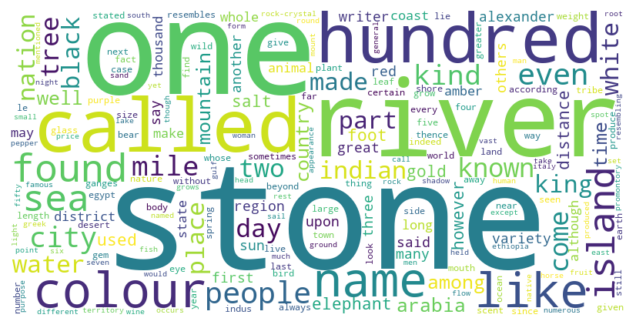
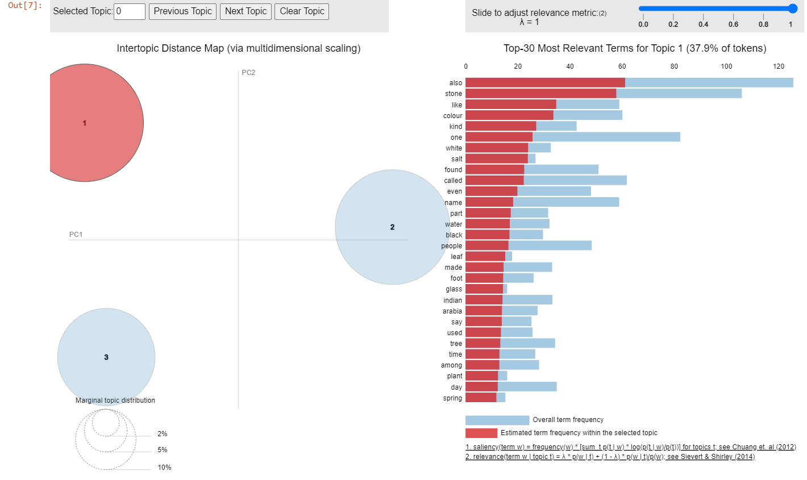
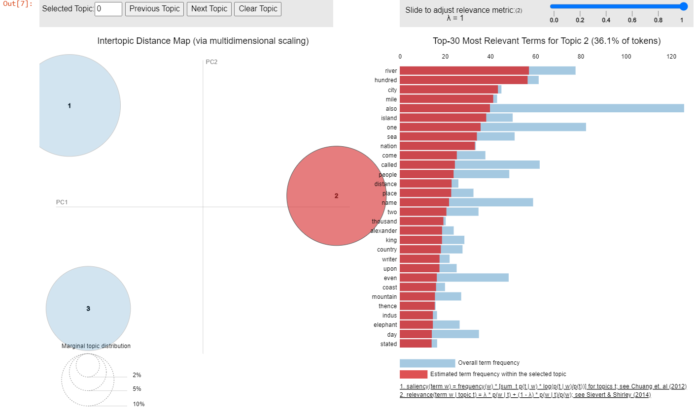
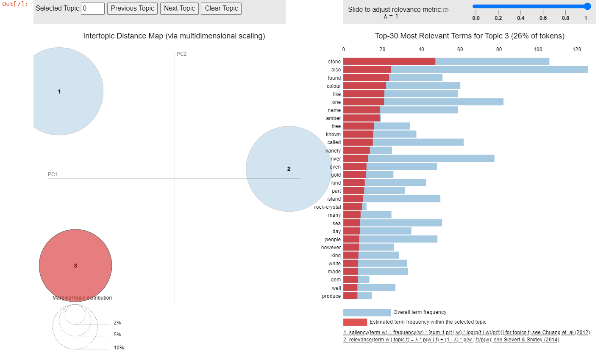

| Total_length | Place_count | Place_freq | |
|---|---|---|---|
| Book | |||
| 1 | 2778 | 1 | 0.000360 |
| 2 | 30570 | 406 | 0.013281 |
| 3 | 18037 | 1007 | 0.055830 |
| 4 | 15434 | 1309 | 0.084813 |
| 5 | 18872 | 1112 | 0.058923 |
| 6 | 27891 | 1012 | 0.036284 |
| 7 | 21204 | 225 | 0.010611 |
| 8 | 24176 | 185 | 0.007652 |
| 9 | 19197 | 140 | 0.007293 |
| 10 | 20816 | 121 | 0.005813 |
| 11 | 27345 | 77 | 0.002816 |
| 12 | 13906 | 188 | 0.013519 |
| 13 | 13243 | 164 | 0.012384 |
| 14 | 15277 | 189 | 0.012372 |
| 15 | 14552 | 135 | 0.009277 |
| 16 | 25442 | 180 | 0.007075 |
| 17 | 29387 | 82 | 0.002790 |
| 18 | 35850 | 222 | 0.006192 |
| 19 | 18822 | 146 | 0.007757 |
| 20 | 22743 | 21 | 0.000923 |
| 21 | 17896 | 95 | 0.005308 |
| 22 | 16491 | 24 | 0.001455 |
| 23 | 15764 | 17 | 0.001078 |
| 24 | 17491 | 56 | 0.003202 |
| 25 | 16734 | 85 | 0.005079 |
| 26 | 15448 | 35 | 0.002266 |
| 27 | 12444 | 40 | 0.003214 |
| 28 | 26476 | 28 | 0.001058 |
| 29 | 13976 | 31 | 0.002218 |
| 30 | 14395 | 23 | 0.001598 |
| 31 | 12204 | 222 | 0.018191 |
| 32 | 14635 | 76 | 0.005193 |
| 33 | 17946 | 113 | 0.006297 |
| 34 | 18972 | 193 | 0.010173 |
| 35 | 21283 | 277 | 0.013015 |
| 36 | 21295 | 357 | 0.016764 |
| 37 | 22255 | 282 | 0.012671 |
Mapping India in Pliny the Elder’s Natural History
Abstract
this is an abstract
1 Introduction
1.1 Natural History and its complexity
Pliny the Elder’s Natural History is widely recognized as the earliest encyclopedia in the world, manifesting a pioneering effort in comprehensively cataloging the vast array of human knowledge from that era.
The work is thematically divided into 37 books, covering a diverse range of subjects including astronomy, geography, zoology, botany, medicine, and more. Pliny meticulously consulted a wide range of Greek and Roman references, totaling approximately 2,000 volumes1, and interwove his own literary interpretation or comments to the narratives.
Despite the carefully designed knowledge-ordering framework (Lao 2016), scholars have observed a paradoxical complexity in Natural History, evident in its linguistic style, narrative approach, and use of references. The work compiles inconsistent toponyms from Greek and Latin, includes digressions in descriptions (Roller 2022), exhibits changes in vocabularies and sentence structures (Pinkster 2005). However, it is precisely this complexity that makes the work more fascinating and not only a valuable source to the knowledge and worldview of the ancient world, but also a gateway into Pliny’s conceptualization, imagination, and even the prevailing imperial ideology.
The complexity and interconnectivity of the general structure of Natural History is further highlighted in different aspects by refreshing approaches. In terms of content organization of the work, Healy (1999) vandicated Pliny’s original contribution in unveiling the technology and science engagement of the Rome Empire from the description about natural phenomena and scientific experiment to the development of scientific language in Latin, taking the historical, political and liguistic context into consideration. And Naas (2002) discussed how Pliny formulated the the diversed materials into his encyclopaedic structure, revealing the work’s multifaceted nature as an epistemological, ideological, and moral project. By analysing Pliny’s employment of the historical exemplum in the work, Schultze (2011) argues how the specific literary device directed and teased the readers and established a profound connection between human beings and the entire spectrum of nature in Natural Hisroty.
In addition to the close reading methods used in the prior analyses of the context and references in Natural History, Rydberg-Cox (2021) employs network analysis method with different metrics to map the interrelationships between Pliny’s sources and the topics discussed in the work. Furthermore, Fantoli (2022) presents a comparative study of book 2 of Natural History and book 7 of Seneca’s work Natural Questions, both centered on astronomy, utilizing statistical analysis to identify Pliny’s unique stylistic features based on variations in their discourse distribution, and proved the encyclopedic authorial intent shown in Natural History with correspondence and tree analysis. These two studies also demonstrate how distant reading methodologies offer novel insights into the understanding of ancient treatises.
1.2 Spatial perspective in Natural History
As pointed out by Beagon (2011), differenciating from his pressedors, Pliny showed a “terrestrial curiosity” in Natural History, emphasizing a recognition of the physical, material world. In this regard, the vision of geography plays a pivotal role in distributing information, knowledge, and events throughout Natural History.
Drawing from the long-established topographical and ethnographic traditions, Pliny seamlessly connects volumes dedicated to geography (books 3-6) with broader elements, activities, and cultural, historical, and societal contexts(Roller 2022), exemplified in his portrayal of exotic plants, communities’ habitats, imperial expeditions, and trade ventures. In other words, geographical names occured in each book of Natural History served as signposts guiding readers through diverse lands, shedding light on how Pliny and his contemporaries perceived and conceptualized the world around them.
A normalized frequency of place name occurence in the work is calculated as the ratio of counts of the occurrences of place names in each book to the word lengths of the book (Table 1). The bar chart (Figure 1) depicted the comparison of distribution of place names in the books of Natural History. The observation is in line with content structure of Natural History, that books 3-6 centered around the themes of “Geography and ethnography”, contains the most mentions of location names, and place names are also frequently referred in books about agriculture and horticulture (book 12-14), aquatic life (book 31), and mining and mineralogy (book 34-37).

1.3 Text source for the study
Natural History is originally written in Latin. For the purpose of this study, an English translation conducted by Henry T. Riley (1816-1878) and John Bostock (1773-1846), which was first published in 1855, is utilized. The translated text is obtained in a digitized version from the TOPOSText project, having been sourced from the Perseus Project and governed by a Creative Commons Attribution-Share-Alike 3.0 U.S. License.
Annotations of people’s name, places’ name and geographical coordinates are available together with the text of Natural History (Book1-11, Book12-37) on TOPOSText project. This invaluable resource allows for the creation of a dataset that includes both the textual contents and geographical annotations, which can be utilized to investigate the distribution of place names in the entire text and examine the frequencies and patterns of geography-related content.
The extension of the extracted corpora and the workflow of the extraction will be further explained in the Methodology chapter (Section 3).
2 Research Question
2.1 Prominent mentioned places in Natural History
Based on the geographical annotations in Natural History provided by TOPOSText project, there are 2052 unique places mentioned in Natural History.
The top 20 most frequent place names mentioned (as 1% of total) in Natural History is shown in Table 2.
| ToposText_ID | Place_Name | Lat | Long | Count | |
|---|---|---|---|---|---|
| 1687 | https://topostext.org... | Italy | 40.6000 | 16.30000 | 292 |
| 2034 | https://topostext.org... | Rome | 41.8910 | 12.48600 | 269 |
| 52 | https://topostext.org... | Egypt | 27.1000 | 30.70000 | 261 |
| 82 | https://topostext.org... | India | 30.0000 | 74.00000 | 167 |
| 57 | https://topostext.org... | Arabia | 28.0000 | 40.00000 | 123 |
| 320 | https://topostext.org... | Syria | 35.5000 | 39.00000 | 109 |
| 255 | https://topostext.org... | Cyprus | 35.0000 | 33.00000 | 85 |
| 109 | https://topostext.org... | Nile | 30.0918 | 31.23130 | 85 |
| 2282 | https://topostext.org... | Alps | 44.1420 | 7.34300 | 82 |
| 766 | https://topostext.org... | Sicily | 37.6000 | 14.50000 | 71 |
| 275 | https://topostext.org... | Crete | 35.2052 | 25.18360 | 64 |
| 7 | https://topostext.org... | Ethiopia | 13.0100 | 35.01000 | 58 |
| 417 | https://topostext.org... | Rhodes | 36.4408 | 28.22440 | 56 |
| 966 | https://topostext.org... | Athens | 37.9718 | 23.72793 | 56 |
| 2043 | https://topostext.org... | Capitol | 41.8933 | 12.48300 | 52 |
| 298 | https://topostext.org... | Euphrates | 35.2791 | 40.27080 | 47 |
| 2241 | https://topostext.org... | Pontus | 43.5000 | 33.50000 | 47 |
| 1839 | https://topostext.org... | Campania | 41.1000 | 14.60000 | 46 |
| 1480 | https://topostext.org... | Armenia | 39.7020 | 44.29800 | 45 |
| 17 | https://topostext.org... | Red Sea | 19.5000 | 39.00000 | 42 |
| 545 | https://topostext.org... | Carthage | 36.8500 | 10.32000 | 42 |
| 602 | https://topostext.org... | Cilicia | 37.0100 | 34.01000 | 42 |
The place names referenced in Natural History are geographically mapped, with each location marked on the map using its corresponding coordinates. A dot is assigned to represent each place, with the size and color of the dot reflecting the frequency of its mention in the book. The larger and darker the dot, the more frequently the place is referenced within the context of Natural History.
An intriguing observation from the output, as depicted in Figure 2, is the prominence of India, a region outside the Mediterranean, despite its high frequency of mentions.

2.2 Why India?
Geographically, India presents itself as a distant and disconnected territory from the Roman Empire, lacking any direct aquatic or land routes with the Mediterranean region. Despite this apparent physical separation, the exotic curiosity Pliny attempted to integrate, as well as the Indo-roman goods exchange network reflected in the work, may contribute to an explaination of the prominent mentioning of India in Natural History as the broader context.
As suggested by (Murphy 2003), the mirabilia, encompassing accounts of extraordinary landscapes, peoples, plants, and animals, assumes a substantial proportion within the books of Natural History. Pliny’s inclusion of such exotic elements not only catered to the prevailing curiosity of his Roman readers but also fostered a comparative perspective between distant locales, exemplified by his references to India, and their natural counterparts within Rome (Naas 2011). Within research framework of Roman Imperialism, the detailed portrayal of foreign lands, such as India, holds significant importance in shaping both Pliny’s and his contemporary Roman readers’ perception of their place within the global landscape (Pollard 2009).
In addition, Natural History serves as a valuable reference for tracking the Indo-Mediterranean network of exchange (Pollard 2009). Through the depiction of cities, ports, and rivers along the trade routes, the work provides substantive evidence of the flourishing trade relations between the Roman Empire and the Indian subcontinent (Neelis 2011). The extensive exemplify of diverse commodities, such as gemstones, glass, spices, textiles, plants, wine, along with the accounts of the currency sestertii involved in the merchandise exchange in the work shed lights to the compelling details and social and cultural implications of this long-distance trade (Székely 2006; Pollard 2009). Furthermore, the direct criticisms regarding the high cost for the luxury items imported from India implies both the magnitude of the trade volume and Pliny’s stance towards this commercial interaction (Neelis 2011).
3 Methodology
3.1 Workflow
The workflow for this study involved the following key stages:
Data Collection:
As mentioned in the Introduction chapter (Section 1), the text employed for this study is obtained from the digitized English translation (by Henry T. Riley (1816-1878) and John Bostock (1773-1846)) of Pliny’s Natural History available on TOPOSText project.
The two parts of Natural History (Book1-11, Book12-37) are scraped for their the textual contents together with the annotated information of the geographical coordinates of the ancient places mentioned in the work, and the book, chapter and paragraph affiliations with the function provided in Beautiful Soup library of Python.
Data Preprocessing:
The information extracted from the html is structured into separate columns as Pandas dataframe, a dataframe for plain text of the entire work, and a dataframe for geographical-related text in Natural History with the geographical annotations are generated and stored in CSV format respectively.
After a preliminary exploration, the research focus is narrowed down to India-related text in Natural History. With a reference to the geographical territories in the consideration of ancient Greek and Roman world (Talbert 2000b), a dataframe for India-related text is filtered from the abovementioned dataframe for geographical-related text with the range of geographical coordinates of India subcontinent in the era of Natural History. The flitered India-related text dataframe is also stored in CSV format.
The location names mentioned in the India-related text is cross checked manually. For those have not annotated in the TOPOSText, they are appended to the dataset.
Data Analysis:
Statistical analysis is conducted in the preliminary exploration of the extracted dataframes. A nomalized frequency of geographical name occurence in each book is calculated for an overview of the place name distribution in Natural History. And the top 1% prominently mentioned place names in the entire work are sorted out with the time of their occurencies. The specific attention on India-related text as a case study is drown from this initial observation.
In the analysis of the India-related text (target corpus) in Natural History, three analysis methods are employed:
Word frequency: single word frequency and bi-gram collocation of the target corpus are measured with the functions in NLTK package for an overview of the keywords relating to India in Natural History.
Topic modelling: Genism library is used for semantic vectorization and implemetion of Latent Dirichlet Allocation (LDA) model for the topic modelling of the India-ralated text, and the library of pyLDAvis is utilized for an interactive visualization. The output of this method shows the potential topics in the India-related text in Natural History.
Network analysis for Named Entities: Person names mentioned in the target corpus are retrieved from the tagging of the text given by the pretrained multilingual Named Entity Recognition model Flair. The person name entities are cross checked with the annotation on TOPOSText. Stone names, river names, mountain names, person names and the book number are extracted as nodes, and the co-occurence between the nodes are calculated as edges for network analysis. The output of this method is a graph showing the clusters of the nodes in the target corpus, indicating the structure of the content related to India in Natural History.
Interpretation and Conclusion:
The workflow and parameter setting of each research method is explained in the beginning of each analysis section. The results aquired from each method is interpreted with a dialouge to the broader literature and close reading of the related text.
In the Conclusion chapter, the findings are illustrated comprehensively in the context of the research questions. And the limitations of each method is discussed and evaluated.
3.2 Data preparation
The present section provides an overview of the data preparation process, encompassing three sub-sections: HTML scraping from TOPOSText, creation of a filtered dataset of “India-related text,” and data completeness checks. The tools and procedures employed in data collection and dataset generation for the study are elucidated in the subsequent content.
3.2.1 HTML scraping from TOPOSText
As previously stated, the textual contents of Pliny’s Natural History are available on the TOPOSText project, presented in two distinct parts: Book1-11, Book12-37. Both parts are provided in HTML format, offering separate sections of the complete work.
To extract the relevant data, the Beautiful Soup tool, a Python library renowned for parsing HTML and XML documents, was employed. This process involved navigating the HTML structure effectively to retrieve essential information.
The text in the HTML documents is organized into paragraphs, each uniquely identified by an “id” attribute that specifies its corresponding book, chapter, and paragraph number. For instance, a typical paragraph has an “id” tag as follows:
<p id=‘urn:cts:latinLit:phi0978.phi001:3.9.7’>
Utilizing these “id” attributes, the paragraphs were meticulously associated with their respective book, chapter, and paragraph information.
As a result of this data extraction process, a reference dataset was obtained, comprising the plain text of Natural History divided into paragraphs, with each paragraph assigned a unique identifier, and separate columns indicating its affliated book, chapter, and paragraph number. An illustrative example of the dataset’s structure can be refered as Table 3.
| UUID4 | Reference | Book | Chapter | Paragraph | Text | |
|---|---|---|---|---|---|---|
| 0 | e9e67565-bb... | urn:cts:lat... | 1 | 1 | 1.0 | PREFACE IN ... |
| 1 | 010b853d-b8... | urn:cts:lat... | 1 | 2 | 1.0 | But who cou... |
| 2 | 2d10e332-9c... | urn:cts:lat... | 1 | 3 | 1.0 | But if Luci... |
| 3 | 113e0b4c-5b... | urn:cts:lat... | 1 | 4 | 1.0 | My own pres... |
| 4 | 19115032-9f... | urn:cts:lat... | 1 | 5 | 1.0 | For my own ... |
There are a total of 3493 paragraphs in the English translated version of Natural History used in this study. The extracted text contains 713300 tokens and 31886 types.2 This reference dataset has been saved in CSV format for record.
Moreover, the geographical annotations concerning the ancient places mentioned in the text are labeled with a class attribute denoted as “place”, exemplified by the following HTML code snippet:
<a about=“https://topostext.org/place/419125LPal” class=“place” lat=“41.8896” long=“12.4884”>Palatine</a>
To compile a comprehensive dataset encompassing all the annotated ancient places, along with their corresponding geographical coordinates and contextual information (such as book, chapter, and paragraph numbers), all annotations under the “place” class are extracted. This dataset enables an analysis of the distribution of place names within Natural History.
As certain places may possess multiple names, ToposText_ID, which is the unique identifier assigned to distinct places available on TOPOSText is also extracted as a reference information. An example of the dataset presenting the geographical-related text in Natural History is provided in Table 4 for reference.
| UUID4 | ToposText_ID | Place_Name | Reference | Lat | Long | Book | Chapter | Paragraph | Text | |
|---|---|---|---|---|---|---|---|---|---|---|
| 0 | bf12... | http... | Academy | urn:... | 37.9920 | 23.7070 | 1 | 8 | 1.0 | For ... |
| 1 | f782... | http... | Pala... | urn:... | 41.8896 | 12.4884 | 2 | 5 | 1.0 | For ... |
| 2 | a0f9... | http... | Esqu... | urn:... | 41.8950 | 12.4960 | 2 | 5 | 1.0 | For ... |
| 3 | b8d8... | http... | Capitol | urn:... | 41.8933 | 12.4830 | 2 | 5 | 1.0 | For ... |
| 4 | f81b... | http... | Rome | urn:... | 41.8910 | 12.4860 | 2 | 6 | 3.0 | Belo... |
According to the geographical annotations of the ancient places occured in Natural History, there are 5595 occurences of place names in book 1-11 and 3281 in book 12-37, adding up to a combined total of 8876 annotated places throughout the work. The geographical-related text in Natural History contains 415474 tokens and 26592 types.3 This dataset including place names and their textual context in Natural History is saved in CSV format for record.
3.2.3 Data completeness check
The paragraphs extracted from the India-related text dataset undergo manual verification for the completeness of Indian place name annotations. Each distinct paragraph in the dataset is individually extracted and stored in TXT format as separate files within a corpus folder. The file names contain information about the affiliating book, chapter, and paragraph numbers.
There are in total 146 distinct paragraghs metioning India places in Natural History accroding to the annotations on TOPOSText.
An example of the exported file name can be referred as follows:
Exported india_corpus\37.77.1_text.txtThe text files are uploaded to Recogito platform, which offers a semantic annotation tool and automatic geographical annotation suggestions from its supported gazetteers. This process is used to cross-check the Indian place name annotations against the data from TOPOSText. Any unannotated Indian place names are identified and marked on the Recogito workspace for further analysis and evaluation.
4 Data Analysis
4.2 Word frequency - To be re-organized from this part
Through the utilization of measures available in the NLTK package, a word frequency list and a list of collocating bi-grams of the texts pertaining to the Indian subcontinent are generated to investigate potential keywords and themes of interest.
To enhance the relevance and descriptive nature of the frequency list, particular attention has been given to exclude two commonly encountered but less informative words, namely “india” and “also”, from the token list.


As depicted in the visualizations, the words “stone,” “river,” and “color” notably stand out, suggesting their prominence in the narrative pertaining to the regions of the Indian subcontinent. This observation is indicative of the significant references to precious stones and the origins and transportation routes associated with the trade of such valuable commodities.
The collocating bi-grams associated with place names of the Indian subcontinent region are extracted based on the top 20 highest scores in the likelihood ration measurement. A higher likelihood ratio score indicates a stronger association or collocation between the words, suggesting that they are more likely to appear together in the given text.
The extracted collocations undergo a filtering process that specifically includes those involving keywords of place names within the regions of the Indian subcontinent, whihc enables a focused analysis of collocations directly relevant to the geographic context.
[('already', 'mentioned'),
('present', 'day'),
('alexander', 'great'),
('father', 'liber'),
('taken', 'drink'),
('formerly', 'called'),
('majesty', 'augustus'),
('fifty', 'mile'),
('late', 'majesty'),
('next', 'come'),
('roman', 'citizen'),
('mile', 'circumference'),
('human', 'being'),
('greek', 'name'),
('late', 'lamented'),
('marcus', 'varro'),
('one', 'hundred'),
('hundred', 'fifty'),
('rising', 'dog-star'),
('emperor', 'nero')]Interestingly, in the flitered bi-grams, 20% of them are referring to human names or names of gods in myths (e.g. Alexander III, the Great (king of Macedon); Octavius Caesar Augustus (Roman Emperor); Nero (Roman emperor); Marcus Varro (ancient Latin scholar), Father Liber (referring to Dionysus, Greek god of winemaking and wine)).
As shown in the quotation of Book 16, Chapter 62, Paragraph 1, the word “India” was mentioned in the context of an introduction of a plant, as a counterpart in the plant origin, and as a conquered land intertwining with the historical story about how the plant was brought to Rome by Alexander the Great.
16.62.1 It is said that ivy now grows in Asia Minor. Theophrastus about 314 BC. had stated that it did not grow there, nor yet in India except on Mount Meros, and indeed that Harpalus had used every effort to grow it in Media without success, while Alexander had come back victorious from India with his army wearing wreaths of ivy, because of its rarity, in imitation of Father Liber; and it is even now used at solemn festivals among the peoples of Thrace to decorate the wands of that god, and also the worshippers’ helmets and shields, although it is injurious to all trees and plants and destructive to tombs and walls, and very agreeable to chilly snakes, so that it is surprising that any honour has been paid to it.
##(More detailed analysis and illustration will be further conducted for the pattern of interactions between Indian subcontinent place names and human names in the book. )
4.3 Topic modelling
Since the corpus size for text pertaining Indian subcontient region is rather small, with certain tryouts, the the number of topics is set as 3 and the passes is set as 40 to get the most noon-overlapping topic clusters.
The word “India” is excluded from the corpus in order to get more descriptive keywords which may contribe to a more concrete topic summary.
The top 30 keywords for each topic, along with their respective weights, which rank their contributions to the topic is shown and visualized as follows.
[(0,
'0.011*"river" + 0.011*"hundred" + 0.008*"city" + 0.008*"mile" + '
'0.008*"also" + 0.007*"island" + 0.007*"one" + 0.007*"sea" + 0.006*"nation" '
'+ 0.005*"come" + 0.005*"called" + 0.005*"people" + 0.004*"distance" + '
'0.004*"place" + 0.004*"name" + 0.004*"two" + 0.004*"thousand" + '
'0.004*"alexander" + 0.004*"king" + 0.003*"country" + 0.003*"writer" + '
'0.003*"upon" + 0.003*"even" + 0.003*"coast" + 0.003*"mountain" + '
'0.003*"thence" + 0.003*"indus" + 0.003*"elephant" + 0.003*"day" + '
'0.003*"stated"'),
(1,
'0.011*"also" + 0.011*"stone" + 0.006*"like" + 0.006*"colour" + 0.005*"kind" '
'+ 0.005*"one" + 0.004*"white" + 0.004*"salt" + 0.004*"found" + '
'0.004*"called" + 0.004*"even" + 0.003*"name" + 0.003*"part" + 0.003*"water" '
'+ 0.003*"black" + 0.003*"people" + 0.003*"leaf" + 0.003*"made" + '
'0.003*"foot" + 0.003*"glass" + 0.003*"indian" + 0.003*"arabia" + '
'0.003*"say" + 0.002*"used" + 0.002*"tree" + 0.002*"time" + 0.002*"among" + '
'0.002*"plant" + 0.002*"day" + 0.002*"spring"'),
(2,
'0.013*"stone" + 0.007*"also" + 0.006*"found" + 0.006*"colour" + '
'0.006*"like" + 0.006*"one" + 0.005*"name" + 0.005*"amber" + 0.004*"tree" + '
'0.004*"known" + 0.004*"called" + 0.004*"variety" + 0.003*"river" + '
'0.003*"even" + 0.003*"gold" + 0.003*"kind" + 0.003*"part" + 0.003*"island" '
'+ 0.003*"rock-crystal" + 0.002*"many" + 0.002*"sea" + 0.002*"day" + '
'0.002*"people" + 0.002*"however" + 0.002*"king" + 0.002*"white" + '
'0.002*"made" + 0.002*"gem" + 0.002*"well" + 0.002*"produce"')]The three generated topics for the Indian subcontinent related texts can be summarized based on the dominant words as follows:
Topic 1: Stones, Rivers, and Islands - various elements related to stones, rivers, and islands. It also touches upon the notion of distance and the mention of gold and gems.
Topic 2: Cities, Trees, and Natural Features - cities, trees, and natural features. It also mentions amber, mountains, and the connection to Arabia.
Topic 3: Salt, Sea, and Water - salt, the sea, and water-related concepts. It also touches upon topics such as animals, Alexander the Great, and the notion of a country.
And Topic 1: Stones, Rivers, and Islands takes the forefront among the other topics.
Consistent with the findings in the frequency list of the corpus, it is evident that “stones” and “rivers” hold a significant presence in the narrative concerning the Indian subcontinent.
The interactive visualisation of the 3 clusters of the topic modelling about India-related text can be accessed on the html version of this thesis.
The static demonstration of the visuslisation can be referred as Figure 7, Figure 8 and Figure 9.
In the left panel of the above interactive chart, each bubble represents a topic, and the size of the bulbble indicates the percentage of the texts in the corpus contributing to the topic. The distance between the bubbles implies the extent of difference between them. And a good topic model is expected to have big and non-overlapping bubbles scattered throughout the chart (Tran 2022).
And in the right panel, the blue bars represent the overall frequency of each word in the corpus. If no topic is selected, the blue bars of the most frequently used words will be displayed. When hovering on the bubbles in the left panel, there will be red bars in the right panel giving the estimated number of times a given term was generated by a given topic. The word with the longest red bar is estimated to be used the most in the texts belonging to that topic.



4.4 Network analysis for named entities
5 Conclusions
{#refs}
References
Beagon, Mary. 2011. “Chapter Five. The Curious Eye Of The Elder Pliny.” In Pliny the Elder: Themes and Contexts, 71–88. Brill. https://brill.com/display/book/edcoll/9789004210073/Bej.9789004202344.i-248_006.xml.
Fantoli, Margherita. 2022. “Statistics and Linguistics: Can We Tell Something More about Pliny the Elder?” https://classics-at.chs.harvard.edu/statistics-and-linguistics-can-we-tell-something-more-about-pliny-the-elder/.
Healy, John F. 1999. Pliny the Elder on Science and Technology. Oxford: university press.
Lao, Eugenia. 2016. “Taxonomic Organization in Pliny’s Natural History.” In Greek and Roman Poetry, the Elder Pliny, edited by Francis Cairns and Roy Gibson, 209–46. Papers of the Langford Latin Seminar 16. Prenton: Francis Cairns Publications.
Murphy, Trevor. 2003. “11. Pliny’s Naturalis Historia: The Prodigal Text.” In, 301–22. BRILL. https://doi.org/10.1163/9789004217157_012.
Naas, Valérie. 2002. Le Projet Encyclopédique de Pline l’Ancien. Collection de l’école Française de Rome 303. Rome: Ecole française de Rome.
———. 2011. “Chapter Four. Imperialism, Mirabilia, And Knowledge: Some Paradoxes In The Naturalis Historia.” In Pliny the Elder: Themes and Contexts, 57–70. Brill. https://brill.com/display/book/edcoll/9789004210073/Bej.9789004202344.i-248_005.xml.
Neelis, J. 2011. “Chapter Three. Trade Networks In Ancient South Asia.” In Early Buddhist Transmission and Trade Networks, 183–228. Brill. https://brill.com/display/book/9789004194588/Bej.9789004181595.i-372_004.xml.
Pinkster, Harm. 2005. “The Language of Pliny the Elder.” Journal of Asthma - J ASTHMA 129 (November): 239–56. https://doi.org/10.5871/bacad/9780197263327.003.0011.
Pollard, Elizabeth Ann. 2009. “Pliny’s Natural History and the Flavian Templum Pacis: Botanical Imperialism in First-Century C. E. Rome.” Journal of World History 20 (3): 309–38. https://www.jstor.org/stable/40542802.
Roller, D. W. 2022. “Introduction.” In A Guide to the Geography of Pliny the Elder, 1–14. Cambridge: Cambridge University Press. https://doi.org/10.1017/9781108693660.003.
Rydberg-Cox, Jeff. 2021. “Modeling the Sources and Topics of Pliny’s Natural History.” Umanistica Digitale, no. 11: 217–29. https://doi.org/10.6092/issn.2532-8816/12521.
Schultze, Clemence. 2011. “Chapter Ten. Encyclopaedic Exemplarity In Pliny The Elder.” In Pliny the Elder: Themes and Contexts, 167–86. Brill. https://brill.com/display/book/edcoll/9789004210073/Bej.9789004202344.i-248_011.xml.
Székely, Melinda. 2006. “Eastern Trade of the Roman Empire Based on Pliny the Elder’s Natural History.” Chronica 6 (January): 199–206. https://www.proquest.com/docview/2379648941/citation/93A42D142D614235PQ/1.
Talbert, Richard J. A. 2000a. Barrington Atlas of the Greek and Roman World: Map-by-Map Directory. Princeton (N.J.): Princeton university press.
———. 2000b. Barrington Atlas of the Greek and Roman World. Princeton (N.J.): Princeton university press.
Tran, Khuyen. 2022. “pyLDAvis: Topic Modelling Exploration Tool That Every NLP Data Scientist Should Know.” https://neptune.ai/blog/pyldavis-topic-modelling-exploration-tool-that-every-nlp-data-scientist-should-know.
Footnotes
Natural History 1.5.1 (https://topostext.org/work/148)↩︎
The token and type counts were obtained by excluding punctuation marks.↩︎
The token and type counts were obtained by excluding punctuation marks.↩︎
As indicated in the map-by-map directory, the range spans territories of “modern states of India (minus the Punjab), Bangladesh, Bhutan, Burma, Nepal, and Sri Lanka”.↩︎
The token and type counts were obtained by excluding punctuation marks.↩︎